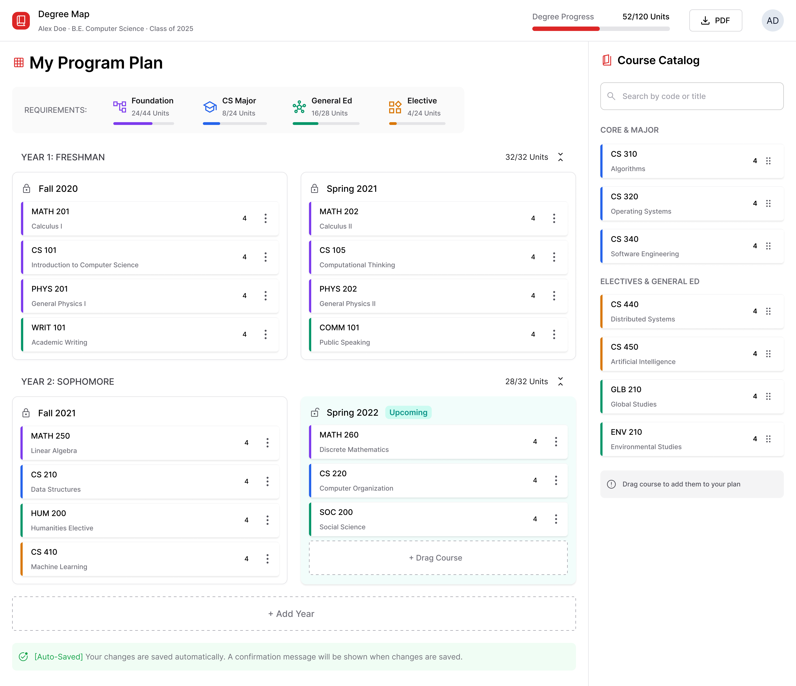
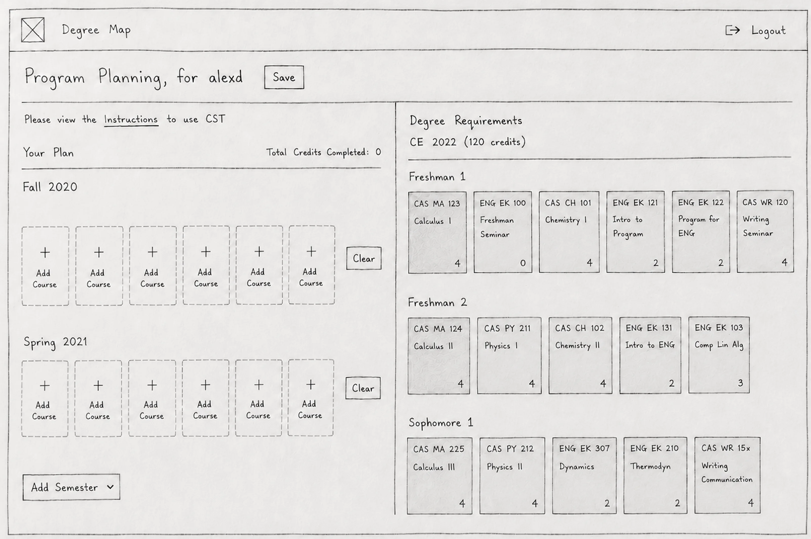
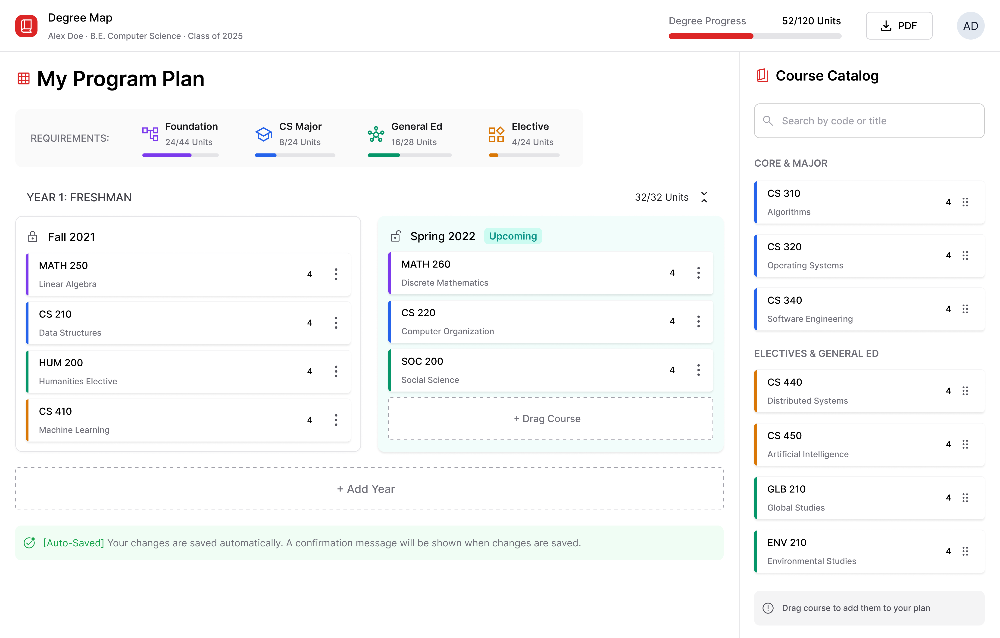
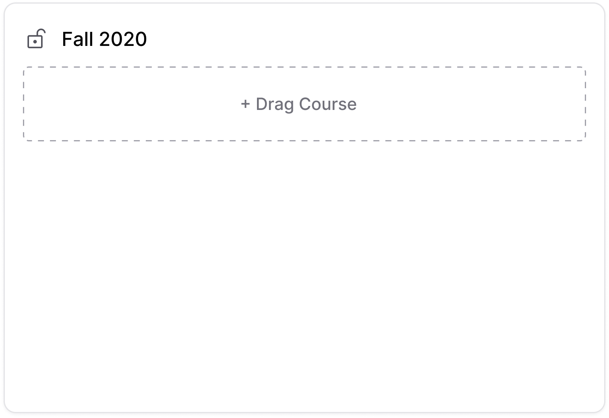
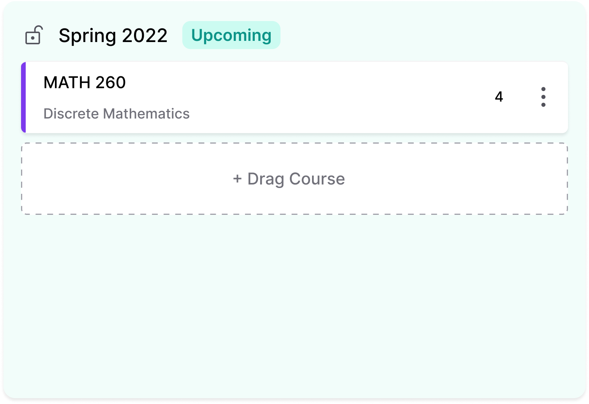
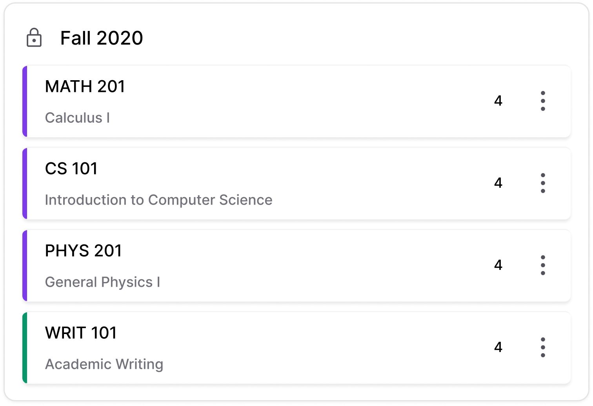
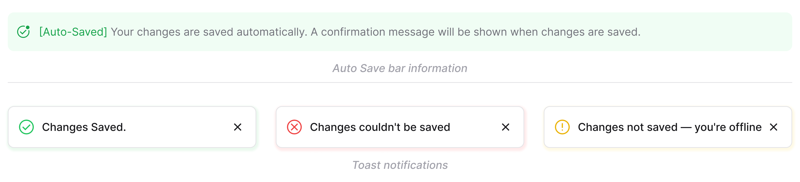
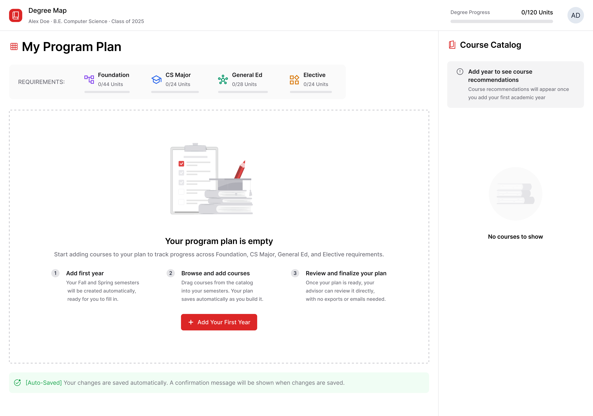

Degree Map
A degree planning tool used by 2,000+ students and advisors each semester at Boston University. Rebuilt so the interface explains its own rules instead of requiring documentation.

The product worked. The interaction model didn't.
Degree Map began as an engineering build to track requirements and organize semesters. I worked on it for five years in total: two as a developer who also handled design, then three as its UX designer. That long view let me see exactly where the interaction model broke down.
Ownership across product behavior, interaction, and implementation
Product & Interaction Direction
Turning recurring interaction failures, surfaced through long-term exposure, into prioritized decisions.
Information Architecture
Restructuring semesters, requirements, and progress so students see their current state at a glance.
Interaction System & Logic
Translating prerequisite rules, semester states, and drag-and-drop constraints into interface behavior.
Accessibility & Feedback
Ensuring important states and system feedback remain clear beyond color alone.
Students had to figure out too much for themselves
Version 1 was built for correctness, not communication. Prerequisite rules, locking, and course mapping existed, but the interface didn't explain them when students encountered them.

Same product. A different interaction model.

Version 1: what we shippedCurrent: what students neededStudents navigating a consequential decision with limited product familiarity
Students were not frequent users of the planning system. They needed to understand their progress, know what they could and could not do, trust that their work was saved, and share their plan with an advisor without extra steps.
How the system explains itself
A small token system, not a one-off skin
Course categories, semester states, and status feedback share the same base tokens: four category colors, zinc tint grouping, and a consistent type and spacing scale, so new states need no new visual language.
Four decisions that closed the gap between Version 1 and what students needed
Semester states communicate without explanation
Completed, upcoming, and empty semesters needed distinct states, so students could orient themselves without decoding the interface.
Considered: color-coded semester backgrounds with a legend. Rejected because a legend is one more thing to learn, and color alone fails students with color vision deficiency.



Auto-save removes anxiety without removing trust
Students often lost work switching tabs because saving was manual. Removing the Save button fixed that. Because I built the save endpoint myself, I knew a save could fail silently on a poor connection, so the toast needed to confirm a successful save rather than simply respond to the click.
Considered: keeping the Save button and adding an unsaved-changes warning. Rejected because the warning still interrupts students mid-task, and forgetting to save was the problem in the first place.

The empty state replaces the tutorial
The empty state shows what students are working toward and gives one clear starting point. Adding a year auto-creates its Fall and Spring semesters.
Considered: a guided walkthrough on first visit. Rejected because students plan a few times a year, so a tour would be skipped or forgotten by next semester.

Drag and drop with system awareness
Constraints surface only when relevant: valid zones highlight, invalid drops get a specific reason, like a missing prerequisite. That logic already existed on the backend. The work was exposing it, not leaving students to guess.
Considered: hiding courses a student isn't eligible for. Rejected because students then can't see what they're working toward, and a blocked drop with a reason teaches the rule.
A constraint from the beginning, not the end
Version 1 relied heavily on color for some categories. Reviewing the interface with accessibility in mind led us to identify where color needed additional cues, particularly for important states and feedback.
Semester states
Icon, visual treatment, and text badge provide multiple signals for state.
Auto-save status
Icon, text, and color communicate the save state redundantly.
Error states
Specific text explains what happened and what the student should do next.
What we would improve next
- Course category indicators currently rely on color. I'd add a non-color cue so category distinctions don't depend on color alone.
- Full WCAG 2.1 AA contrast audit
- Testing with assistive technology and a color blindness simulator
What shaped these decisions, and what's missing
The design work was carried out within a legacy system I couldn't fully rebuild, making it more practical to expose existing logic than rewrite it. Failures surfaced through support requests, advisor feedback, and direct observation rather than structured usability testing.
Usage, adoption, and bug-report volume were tracked before and after the redesign. A formal usability measure such as task completion time was not captured, so the bug-report reduction provides the clearest quantitative comparison.
Observations became design priorities
Rather than treat each issue as an isolated bug, I grouped recurring problems by what they revealed, and each observation led directly to a design response.
Instructions were a symptom
Documentation revealed a communication problem.
System rules were invisible
Prerequisites, locking, saving: the rules existed, but nothing surfaced them.
Students needed confidence, not complexity
Infrequent use required a self-explanatory interface.
The strongest signal was behavior change
Before this, students planned on paper and relied on advisors to catch errors. A shared, validated system moved much of that work into one place, contributing to strong faculty adoption.
Students and advisors each semester
Platform usage activity across enrolled programs, tracked each semester.
Fewer bug reports after the redesign
Version 1 shipped with a high bug-report volume; the revised interaction model brought that down by roughly 80%.
Until other departments asked for access
Requests came without formal promotion or a rollout campaign. They asked because they'd seen it in use.
The redesign turned a fragmented planning process into one shared, more reliable workflow.
What I'd carry into the next product
Long-term exposure only helps when it changes the questions you ask. Treat system logic, user behavior, and interface behavior as one design problem.
What worked
- Turning recurring support issues into product-level design priorities.
- Treating system logic, interaction, and implementation as one design problem.
What I'd do differently
- Model prerequisite logic alongside layout earlier, so both evolve together.
- Test lo-fi flows earlier across the full range of student digital literacy.
Where the product could go next
Three directions stood out based on remaining user needs, rather than a long feature backlog.
Mobile experience
Simplified semester cards and interactions for smaller screens.
Advisor workflow
A dedicated way for advisors to review plans and flag conflicts.
Proactive planning
Surface patterns and warnings from the planning data, not just react to input.
Keep exploring